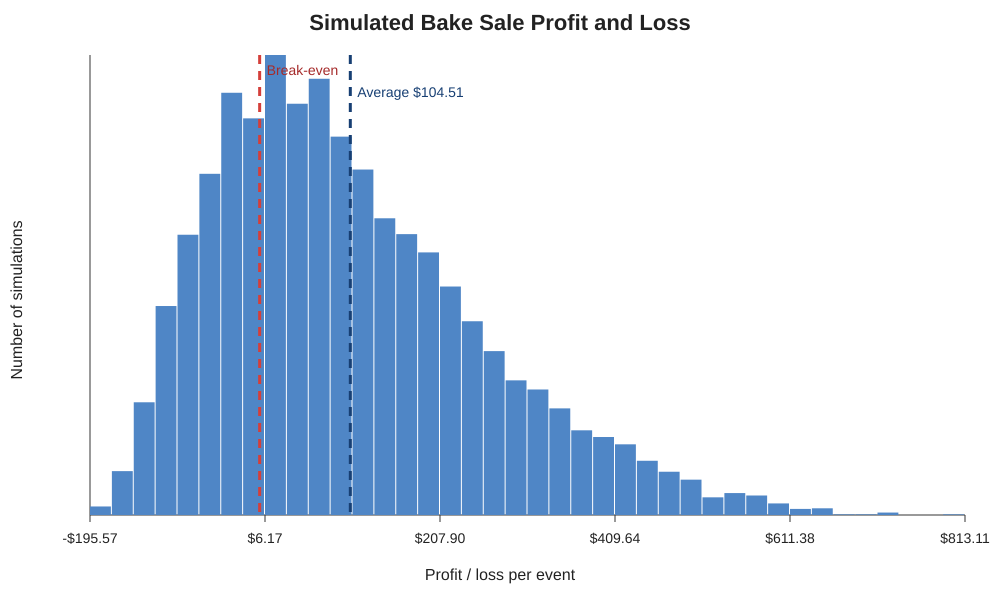

1. Start with the decision
You must pay $250 for ingredients, packaging, and setup before the sale begins.
2. Describe what is uncertain
Every value inside each range is treated as equally likely because no historical distribution was provided.
3. Simulate one possible event
customers = number of attendees who decide to buy
revenue = customers × purchase amount
profit = revenue − fixed cost4. Repeat it 10,000 times
One trial is only one possible future. Repetition creates a distribution that shows both opportunity and risk. The fixed seed of 42 makes this teaching example reproducible.
cd ~/Downloads/code/montecarla/bake-sale-monte-carlo
python3 run.py5. Read the result
of the 10,000 simulated bake sales made a profit.
| Metric | Result |
|---|---|
| Average profit | $104.51 |
| Median profit | $77.25 |
| Middle 90% of outcomes | -$102.55 to $404.74 |
| Worst / best simulated result | -$195.57 / $813.11 |
6. See the full distribution

The red line is break-even. Bars to its left are losses; bars to its right are profits. The blue line is the average result.
7. Inspect the generated data
The video has no external dataset to download. The simulation creates the data itself. The included output/simulation_results.csv contains 10,000 trial rows with attendance, purchase rate, customer count, purchase amount, revenue, and profit.
Interpret carefully: 71.9% is conditional on these assumptions. It is not a promise. Better historical inputs would make the model more realistic.